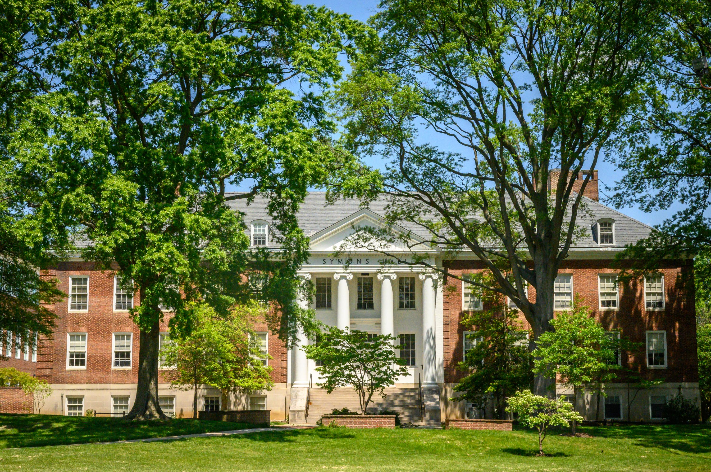

I'm a journalism student at the University of Maryland, focused on news, book editing, and reporting. My skills include feature writing and copy editing. When I'm not working, you can find me curled up with a good piece of literary fiction or searching for new teas to try :).
lately

Comms. Intern - College of Agriculture and Natural Resources
- Create graphic designs for event promotions, including student recruitment events.
- Assist with website content management, including editing and uploading articles and magazine stories.
- Produce social media content and help edit communication materials to support department initiatives.

Freelance Reporter - Just The News
- Cover local and national news with a focus on education, culture, and civil rights.
- Report on high-impact stories, including legal complaints, policy changes, and community developments.
- Produce enterprise stories and breaking news coverage for a D.C.-based audience.
News Editor - The Black Explosion Newspaper
- Lead pitch and staff meetings for the hard news section, focusing on campus protests, policy changes, and Black student issues.
- Reported on Vice President Harris's campus visit and edited coverage of NIH funding cut protests.
- Ensure stories reflect diverse perspectives and meet AP Style standards.